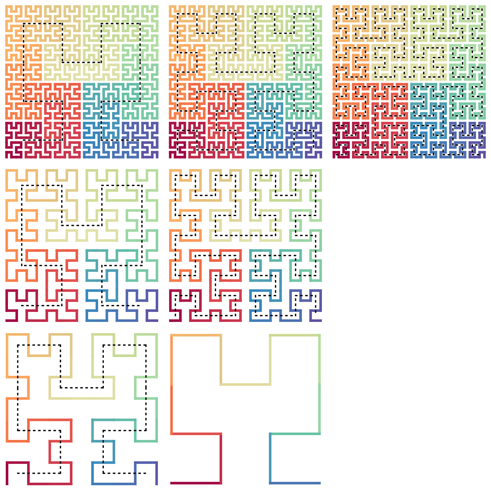
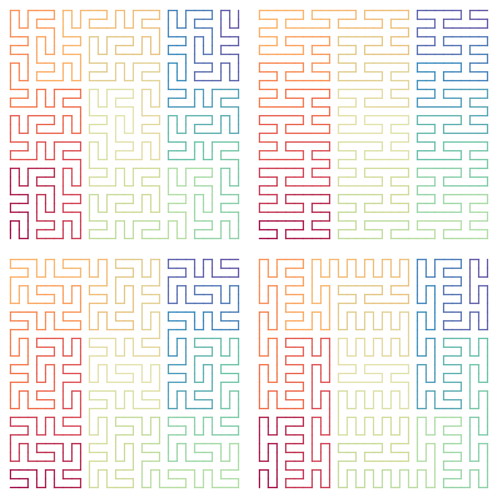

Standard curves
Zuguang Gu (z.gu@dkfz.de)
2024-07-30
Source:vignettes/standard_curves.Rmd
standard_curves.Rmd2x2 standard curves
Hilbert curve and Moore curve
Both standard Hilbert curve and Moore curve use the “Hilbert level-2 unit”:

while on the global level, Hilbert curve uses the “Hilbert structure” (left) while Moore curve uses the “Moore structure” (right):

Let’s check the standard Hilbert curve on various levels and their structures. Note Moore curve still uses the Hilbert structure on lower levels.
p = hilbert_curve(level = 5)
draw_multiple_curves(
p |> sfc_grob() |> add_base_structure(level = 2),
p |> sfc_grob() |> add_base_structure(level = 3),
p |> sfc_grob() |> add_base_structure(level = 4),
sfc_reduce(p, 4) |> sfc_grob() |> add_base_structure(level = 2),
sfc_reduce(p, 4) |> sfc_grob() |> add_base_structure(level = 3),
grob(), # a null grob, a place holder
sfc_reduce(p, 3) |> sfc_grob() |> add_base_structure(level = 2),
sfc_reduce(p, 2),
ncol = 3, padding = unit(4, "pt"))
p = moore_curve(level = 5)
draw_multiple_curves(
p |> sfc_grob() |> add_base_structure(level = 2),
p |> sfc_grob() |> add_base_structure(level = 3),
p |> sfc_grob() |> add_base_structure(level = 4),
sfc_reduce(p, 4) |> sfc_grob() |> add_base_structure(level = 2),
sfc_reduce(p, 4) |> sfc_grob() |> add_base_structure(level = 3),
grob(), # a null grob, a place holder
sfc_reduce(p, 3) |> sfc_grob() |> add_base_structure(level = 2),
sfc_reduce(p, 2),
ncol = 3, padding = unit(4, "pt"))
As a comparison, general Hilbert curves may not have the “Hilbert structure” on some higher levels:
p = sfc_hilbert("I", "21211")
draw_multiple_curves(
p |> sfc_grob() |> add_base_structure(level = 2),
p |> sfc_grob() |> add_base_structure(level = 3),
p |> sfc_grob() |> add_base_structure(level = 4),
nrow = 1, padding = unit(4, "pt"))
The functions hilbert_curve() and moore_curve() are generated by the more general function sfc_hilbert() by choosing specific base patterns and transverse path. For example, a standard Hilbert curve on level 5 is:
sfc_hilbert("R", code = "11111")And a standard Moore curve on level 5 is (where the last two digits should be 21):
sfc_hilbert("C", code = "11121", rot = 90)Beta-Omega curve
The \(\beta\Omega\)-curve (Michael Bader. Space-Filling Curves: An Introduction with Applications in Scientific Computing, 2012 Springer, Figure 7.7) uses the \(\beta\) (left) and the \(\Omega\) (right) units.

It uses the “Moore global structure”:
p = beta_omega_curve(level = 5)
draw_multiple_curves(
p |> sfc_grob() |> add_base_structure(level = 2),
p |> sfc_grob() |> add_base_structure(level = 3),
p |> sfc_grob() |> add_base_structure(level = 4),
sfc_reduce(p, 4) |> sfc_grob() |> add_base_structure(level = 2),
sfc_reduce(p, 4) |> sfc_grob() |> add_base_structure(level = 3),
grob(), # a null grob, a place holder
sfc_reduce(p, 3) |> sfc_grob() |> add_base_structure(level = 2),
sfc_reduce(p, 2),
ncol = 3, padding = unit(4, "pt"))
The function beta_omega_curve() is also generated by sfc_hilbert(). E.g., a \(\beta\Omega\)-curve on level 5 is actually (digits 1 and 2 are in turn):
sfc_hilbert("C", "12121", rot = -90)3x3 standard curves
Peano curve
The basic unit in the Peano curve has two different forms: vertical (left) and horizontal (right) (of course their flipped versions):
The standard Peano curve requires all these units on various levels to be vertical.
p = peano_curve(level = 4)
draw_multiple_curves(
p |> sfc_grob() |> add_base_structure(level = 1),
p |> sfc_grob() |> add_base_structure(level = 2),
p |> sfc_grob() |> add_base_structure(level = 3),
sfc_reduce(p, 3) |> sfc_grob() |> add_base_structure(level = 1),
sfc_reduce(p, 3) |> sfc_grob() |> add_base_structure(level = 2),
grob(), # a null grob, a place holder
sfc_reduce(p, 2) |> sfc_grob() |> add_base_structure(level = 1),
sfc_reduce(p, 1),
nrow = 3, lwd = 2, padding = unit(4, "pt"))
The general Peano curve has a huge number of different forms by flipping units on various level. But we can still generate a Peano curve with specific patterns on low levels (e.g. on level-1).
peano_curve() has an argument pattern which defines the patterns on level-1. Since the unit can be flipped either vertically or horizontally, the value for pattern should be a string of "v" and "h" that controls how the level-1 units are selected and compose to level-2. The maximal number of letters in pattern should not exeed 9. If it is shorter than 9, it will be automatically recycled.
We can set different combination patterns of “vertical units” and “horizontal units”. For example, the Peano curve in the different switch-back types (Hans Sagan, Space-Filling Curves, 1994 Springer, Figure 3.7.1)
draw_multiple_curves(
peano_curve(level = 3, pattern = "vh"),
peano_curve(level = 3, pattern = "h"),
peano_curve(level = 3, pattern = "hv"),
peano_curve(level = 3, pattern = "vvvhhhvvv"),
nrow = 2, lwd = 2, padding = unit(4, "pt"))
Since pattern is applied to every level in the curve generation, if you want the nine level-1 units with the pattern "vvvhhhvvv" only applied on level-1, you have to first generate a all-v curve then adjust the 1-3, 7-8 subunits to vertical and the 4-6 subunits to horizontal.
p = sfc_peano("I", level = 3, flip = function(p) {
p@rot %in% c(90, 270)
})
p = sfc_apply(p, 2, function(u, i) {
if(i %% 9 %in% c(1, 2, 3, 7, 8, 9)) {
if(level1_unit_orientation(u) == "horizontal") {
sfc_flip_unit(u)
} else {
u
}
} else {
if(level1_unit_orientation(u) == "vertical") {
sfc_flip_unit(u)
} else {
u
}
}
}) |> plot(lwd = 2)
Meander curve
The Peano curve in the meander type (Hans Sagan, Space-Filling Curves, 1994 Springer, Figure 3.7.3). It has the basic unit forms: forward (left) and backward (right). If thinking the top part of the unit representing the direction of the “wave”, then forward means the direction of the wave is the same as the direction of the curve and verse visa for backward.

The expanding rules in draw_rules_meander() use the “forward” unit for all patterns with transverse code 1.
p = meander_curve(level = 4)
draw_multiple_curves(
p |> sfc_grob() |> add_base_structure(level = 1),
p |> sfc_grob() |> add_base_structure(level = 2),
p |> sfc_grob() |> add_base_structure(level = 3),
sfc_reduce(p, 3) |> sfc_grob() |> add_base_structure(level = 1),
sfc_reduce(p, 3) |> sfc_grob() |> add_base_structure(level = 2),
grob(), # a null grob, a place holder
sfc_reduce(p, 2) |> sfc_grob() |> add_base_structure(level = 1),
sfc_reduce(p, 1),
nrow = 3, lwd = 2, padding = unit(4, "pt"))
We can also control the individual directions of level-1 units.
draw_multiple_curves(
meander_curve(level = 3, pattern = "fb"),
meander_curve(level = 3, pattern = "fffffbbbb"),
meander_curve(level = 3, pattern = "b"),
meander_curve(level = 3, pattern = "fffbbb"),
nrow = 2, lwd = 2, padding = unit(4, "pt"))